1과목: 사회복지 실천론
1. 실천개입의 목표로 바람직하게 기술된 것은?
2. 청소년을 위한 10주간의 진로집단 활동 전ㆍ후에 진로효능감 검사를 하여 결과를 비교하였다면 이 평가방법은?
3. 사례관리 과정을 순서대로 바르게 나열한 것은?
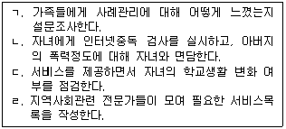
4. 사회복지실천 이념에 관한 설명으로 옳지 않은 것은?
5. 할머니 사망 후 큰아버지 집으로 갑자기 이사 가게 된 빈곤 조손가정 아동의 사례관리자가 수행할 역할로 적절하지 않은 것은?
6. 접수(intake) 시 상담내용으로 옳은 것을 모두 고른 것은?
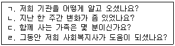
7. 사회복지실천의 목적으로 옳지 않은 것은?
8. 면접 중 침묵을 다루는 사회복지사의 태도로 적절하지 않은 것은?
9. 십대 미혼모 상담 시 사회복지사가 고려해야 할 전문적 관계 요소를 모두 고른 것은?
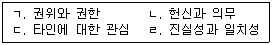
10. 원치 않는 상담을 받게 된 학생에 대한 사회복지사의 접근으로 적절한 것은?
11. 생태도 작성 시 '원'으로는 ( A ), '선'으로는 ( B )을(를) 표시한다. A와 B에 알맞은 것은?
12. 사정을 위한 질문을 모두 고른 것은?
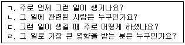
13. 사회복지사의 자기인식에 관한 설명으로 옳은 것은?
14. ‘환경 속의 인간’을 반영한 실천내용으로 옳지 않은 것은?
15. 다음 사례에서 사회복지사가 고수해야 할 전문적 관계의 원칙을 모두 고른 것은?
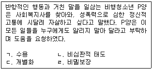
16. 다음에서 설명하는 것은?
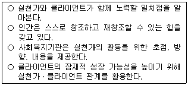
17. 실천현장에 관한 설명으로 옳은 것은?
18. 간접 실천의 예를 모두 고른 것은?
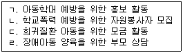
19. 통합적 접근방법에서 사회복지사가 직접 수행하지 않는 것은?
20. 콤튼과 갤러웨이(Compton & Galaway)가 분류한 실천체계를 모두 고른 것은?
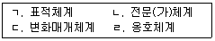
21. 사회복지실천의 예술적 속성(A)과 과학적 속성(B)이 잘못 짝지어진 것은?
22. 통합적 접근방법의 등장 배경이 아닌 것은?
23. 사례관리의 특성을 모두 고른 것은?
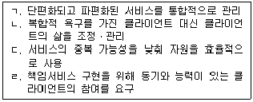
24. 다음 윤리기준은 ‘한국사회복지사 윤리강령’ 중 어디에 속하는가?
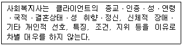
25. 사회복지실천 윤리에 관한 설명으로 옳지 않은 것은?
26. 사회복지실천의 발달과정을 순서대로 바르게 나열한 것은?
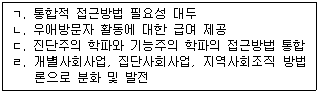
27. 한국 사회복지실천의 역사에 관한 설명으로 옳은 것은?
28. 면접에 관한 설명으로 옳은 것은?
29. 사회복지사 역할의 예로 옳은 것은?
30. 사정을 위한 자료가 될 수 있는 것을 모두 고른 것은?
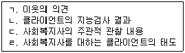
2과목: 사회복지 실천 기술론
31. 가족에 관한 설명으로 옳지 않은 것은?